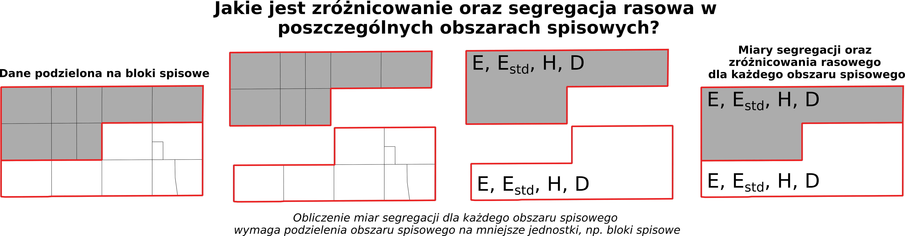
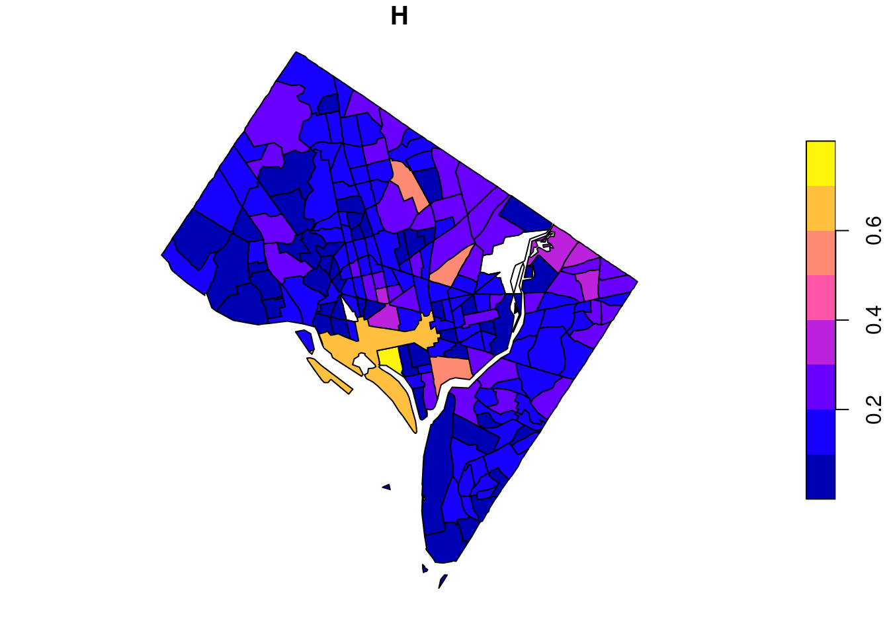
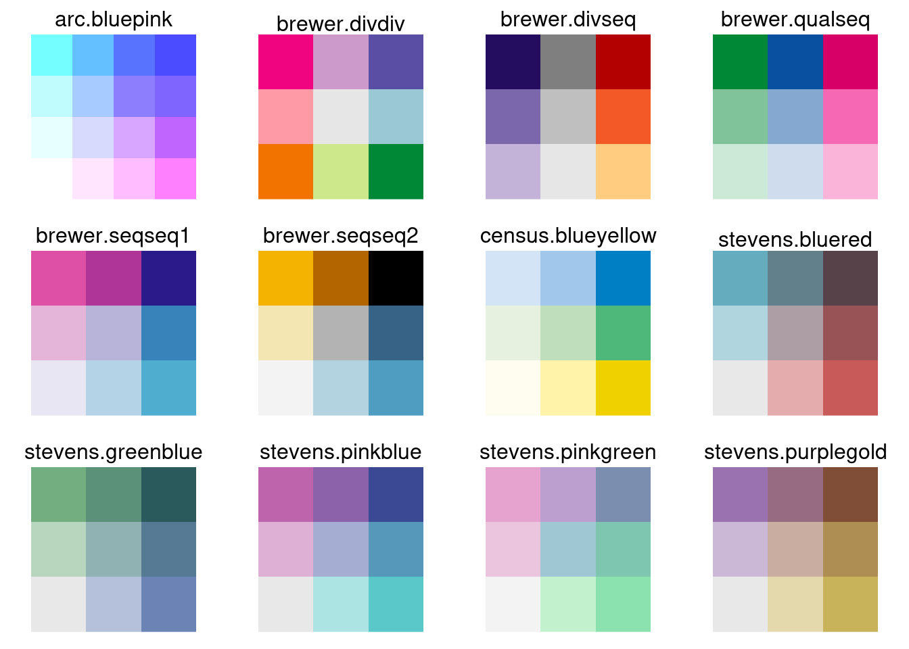
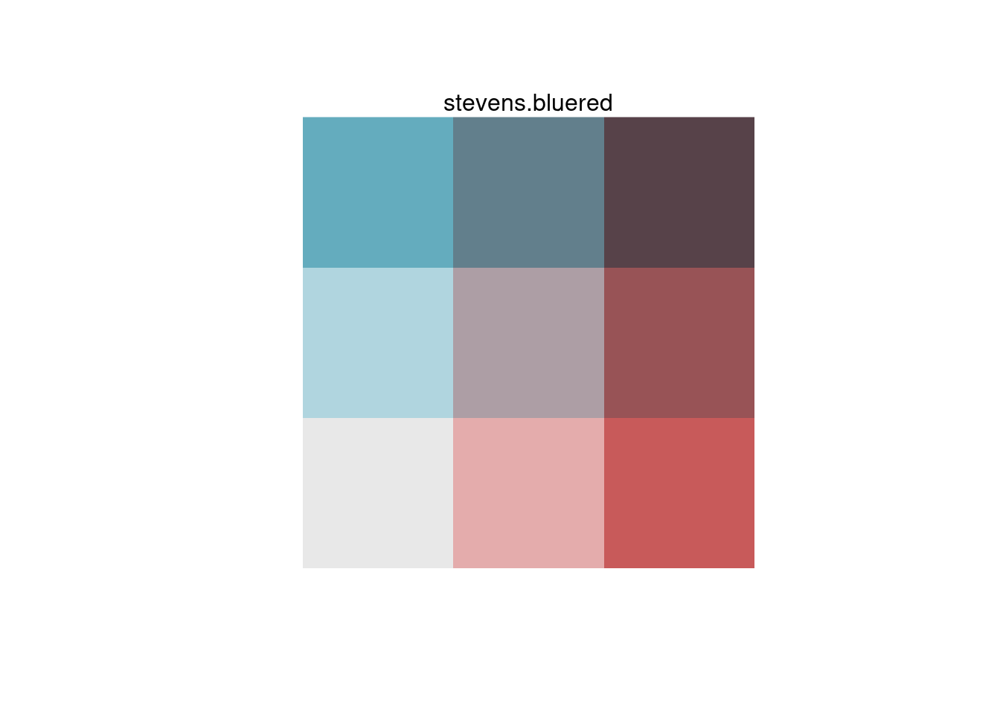
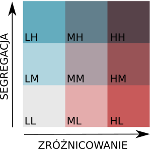
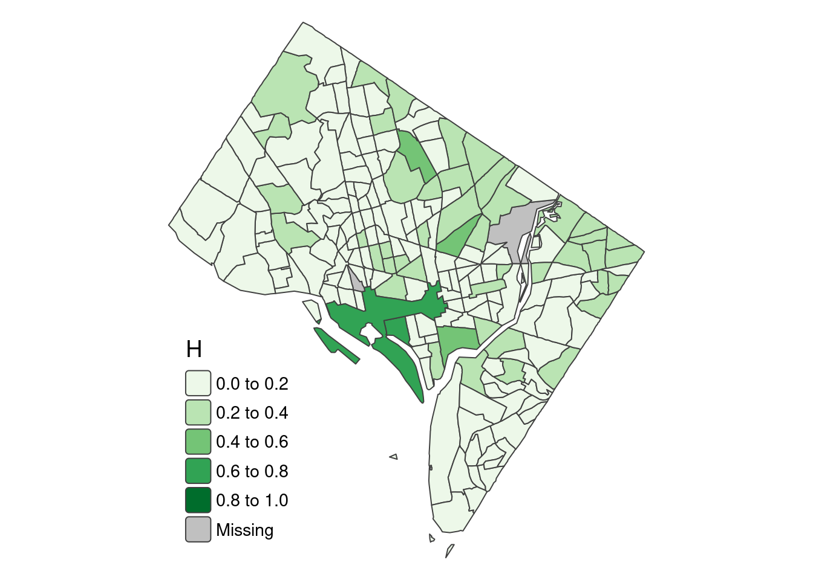
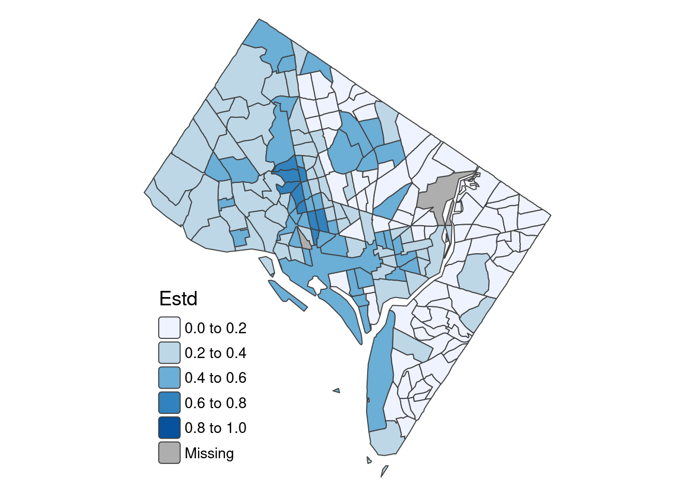
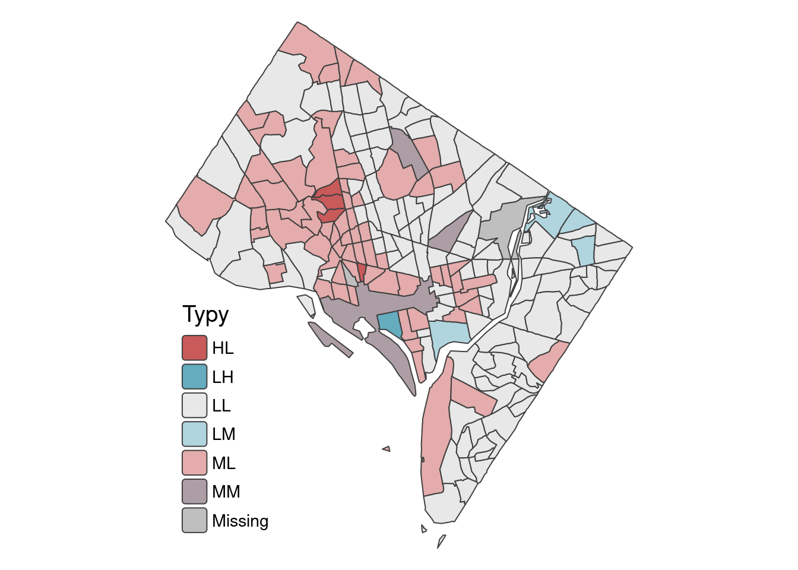

list_race <- c("WHITE", "BLACK", "ASIAN", "HISPANIC", "AM", "OTHER")12 Analiza i wizualizacja zróżnicownia oraz segregacji rasowo-etnicznej na poziomie obszarów spisowych
12.1 Analiza zróżnicowania oraz segregacji rasowej dla poszczególnych obszarów spisowych.
Obliczenie miar segregacji wymaga podzielenia obszaru analizy na mniejsze jednostki. W poniższym przykładzie miary segregacji (wskaźnik teorii informacji H) zostaną obliczone dla każdego obszaru spisowego oddzielnie. Aby to było możliwe każdy obszar spisowy musi zostać podzielony na bloki spisowe, a następnie używając danych z bloków spisowych zostanie policzony wskaźnik H dla każdego obszaru spisowego. Obliczenie wskaźników segregacji dla obszarów spisowych pozwala na przeanalizowanie segregacji rasowej na poziomie lokalnym, wewnątrz miasta.

12.2 Dane dla bloków spisowych
W poniższym przykładzie zostaną obliczone miary segregacji oraz zróżnicowania rasowo-etnicznego dla każdego obszaru spisowego dla 1990 roku. W tym celu zostaną wykorzystane dane:
- dc_blocks_1990_attr.csv zawierające informacje o strukturze rasowo-etnicznej ludności na poziomie bloków spisowych. Pole GISJOIN_T zawiera identyfikator obszaru spisowego.
- dc_tracts.gpkg (layer = “tract_1990”) zawierający granice obszarów spisowych z 1990 roku.
W tym ćwiczeniu nie możemy użyć granic obszarów spisowych ujednoliconych między latami. Wynikowe mapy pokazujące rozkład przestrzenny segregacji rasowo-etnicznej w danym roku nie będą zatem w pełni porównywalne ze względu na zmieniające się granice.
Dlaczego nie możemy użyć granic obszarów spisowych ujednoliconych między latami?
Tabela przedstawia dane dotyczące struktury rasowo-etnicznej dla bloków spisowych dla 6 kategorii rasowo-etnicznych (WHITE, BLACK, ASIAN, HISPANIC, AM, OTHER).
dat_blocks <- read.csv("data/data_attr/dc_blocks_1990_attr.csv")head(dat_blocks) GISJOIN GISJOIN_T WHITE BLACK AM ASIAN OTHER HISPANIC POP
1 G11000100001101 G11000100001 244 13 0 7 0 27 291
2 G11000100001102 G11000100001 22 0 0 13 0 0 35
3 G11000100001103 G11000100001 34 0 0 0 0 1 35
4 G11000100001104 G11000100001 96 0 0 0 0 4 100
5 G11000100001105 G11000100001 39 0 0 1 0 4 44
6 G11000100001106 G11000100001 84 1 0 5 0 3 9312.3 Obliczenie miar segregacji dla obszarów spisowych
Wskaźnik teorii informacji \(H\) obliczany jest według wzoru:
\[H = \sum_{i=1}^{N}\left [ \frac{t_{i}(E - E_{i})}{ET} \right ]\]
Na potrzeby obliczeń wykonywanych w R wzór ten można zapisać następująco:
\[H = \sum_{i=1}^{N}\left [ \frac{pop_{i}(ent - ent_{i})}{ent\times pop} \right ]\] W przypadku obliczania wskaźnika \(H\) dla poszczególnych obszarów spisowych podzielonych na bloki spisowe:
- \(E_{i}\) (ent_i) - entropia bloku spisoweg i wchodzącego w skład obszaru spisowego,
- \(E\) (ent)- entropia obliczona dla obszaru spisowego
- \(t_{i}\) (pop_i) - liczba ludnościbloku spisoweg i wchodzącego w skład obszaru spisowego,
- \(T\) (pop) - liczba ludności dla obszaru spisowego
12.3.1 Obliczenie wskaźnika H dla obszarów spisowych
Obliczenie wskaźnika H dla obszarów spisowych wymaga także obliczenia entropii oraz liczby ludności dla każdego obszaru spisowego. W tym celu dane z bloków spisowych muszą zostać zaagregowane do obszarów spisowych.
Etap 1. Obliczenie entropii oraz liczby ludności w każdym obszarze spisowym.
#proportions - wektor zawierający odsetek poszczególnych ras w ogólnej liczbie ludności (wartości od 0 do 1)
#base - podstawa logarytmu, domyslnie exp(1) oznacza obliczenie logarytmu naturalnego
entropy_fnc = function(proportions, base = exp(1)) {
entr = -sum(ifelse(proportions > 0, proportions * log(proportions, base = base), 0))
return(entr)
}# agregacja danych z bloków spisowych do obszarów spisowych
dat_ct <- aggregate(.~GISJOIN_T, dat_blocks[, c("GISJOIN_T", list_race, "POP")], FUN=sum)
#utworzenie ramki danych zawierajacej identyfikator obszaru spisowego (GISJOINT) oraz ogólną liczbę ludności dla każdego obszaru spisowego.
out_ct <- data.frame(GISJOIN_T = dat_ct$GISJOIN_T, pop = dat_ct$POP)
#obliczenie odsetka ras dla poszczegolnych obszarow spisowych (dane wejsciowe do obliczenia entropii)
perc_ct <- dat_ct[,list_race]/dat_ct$POP
#obliczenie entopii dla każdego obszaru spisowego oraz dodanie jej do obiektu out_ct
out_ct$ent <- apply(perc_ct, 1, entropy_fnc)#obiekt out_ct zawiera identyfikator obszaru spisowego, liczbę ludności w obszarze spisowym (pop) oraz entropię obszaru spisowego (ent)
head(out_ct) GISJOIN_T pop ent
1 G11000100001 4706 0.4798969
2 G1100010000201 3836 0.8706689
3 G1100010000202 3639 0.4449927
4 G1100010000310 5738 0.5095437
5 G11000100004 1319 0.6939255
6 G1100010000501 2774 0.6233946Etap 2. Obliczenie entropii oraz liczby ludności dla każdego bloku spisowego.
Obiekt out_block zawiera dane dla poszczególnych bloków spisowych: GISJOIN - identyfikator bloku spisowego, GISJOIN_T - identyfikator obszaru spisowego, pop_i - ogólna liczba ludności w bloku spisowym.
out_block <- data.frame(GISJOIN = dat_blocks$GISJOIN, GISJOIN_T = dat_blocks$GISJOIN_T, pop_i = dat_blocks$POP)
head(out_block) GISJOIN GISJOIN_T pop_i
1 G11000100001101 G11000100001 291
2 G11000100001102 G11000100001 35
3 G11000100001103 G11000100001 35
4 G11000100001104 G11000100001 100
5 G11000100001105 G11000100001 44
6 G11000100001106 G11000100001 93#obliczenie odsetka wg ras dla każdego bloku (dane wejsciowe do obliczenia entropii dla bloku)
perc_block <- dat_blocks[,list_race]/dat_blocks$POP
perc_block[is.na(perc_block)] <- 0# obliczenie entropii dla każdego bloku
out_block$ent_i <- apply(perc_block, 1, entropy_fnc)
head(out_block) GISJOIN GISJOIN_T pop_i ent_i
1 G11000100001101 G11000100001 291 0.5968203
2 G11000100001102 G11000100001 35 0.6597116
3 G11000100001103 G11000100001 35 0.1297407
4 G11000100001104 G11000100001 100 0.1679441
5 G11000100001105 G11000100001 44 0.4109151
6 G11000100001106 G11000100001 93 0.4086034Etap 3. Obliczenie wskaźnika H dla każdego obszaru spisowego.
Do obliczenia wskaźnika H potrzebne są dane zawarte w obiekcie out_ct oraz out_block.
calc_df <- merge(out_ct, out_block, by="GISJOIN_T")
calc_df <- calc_df[, c("GISJOIN_T", "GISJOIN", "pop", "pop_i", "ent", "ent_i")]
head(calc_df) GISJOIN_T GISJOIN pop pop_i ent ent_i
1 G11000100001 G11000100001101 4706 291 0.4798969 0.5968203
2 G11000100001 G11000100001102 4706 35 0.4798969 0.6597116
3 G11000100001 G11000100001103 4706 35 0.4798969 0.1297407
4 G11000100001 G11000100001104 4706 100 0.4798969 0.1679441
5 G11000100001 G11000100001105 4706 44 0.4798969 0.4109151
6 G11000100001 G11000100001106 4706 93 0.4798969 0.4086034Obiekt calc_df zawiera dane dla każdego bloku spisowego: - pop - liczba ludności w obszarze spisowym, do którego przypisany jest blok i - pop_i - liczba ludności w bloku spisowym i - ent - entropia obszaru spisowego, do którego przypisany jest blok i - ent_i - entropia bloku spisowego i.
calc_df$H <- calc_df$pop_i*(calc_df$ent-calc_df$ent_i)/(calc_df$ent*calc_df$pop)Obliczenie wskaźnika teorii informacji H dla każdego obszaru spisowego.
h_index <- aggregate(H~GISJOIN_T, calc_df, sum)Podsumowanie wyników dla obszarów spisowych.
out_ct <- merge(out_ct, h_index, by = "GISJOIN_T")
colnames(out_ct) <- c("GISJOIN_T", "POP", "E", "H")#obliczenie entropii standaryzowanej
out_ct$Estd <- out_ct$E/log(length(list_race))out <- merge(dat_ct, out_ct[,-2], by="GISJOIN_T")head(out) GISJOIN_T WHITE BLACK ASIAN HISPANIC AM OTHER POP E H
1 G11000100001 4175 147 145 233 3 3 4706 0.4798969 0.10871475
2 G1100010000201 2860 371 315 266 7 17 3836 0.8706689 0.00000000
3 G1100010000202 3267 60 121 181 6 4 3639 0.4449927 0.11623550
4 G1100010000310 5046 186 208 284 8 6 5738 0.5095437 0.06135772
5 G11000100004 1073 48 78 114 5 1 1319 0.6939255 0.24084796
6 G1100010000501 2332 143 107 183 1 8 2774 0.6233946 0.02808431
Estd
1 0.2678356
2 0.4859296
3 0.2483552
4 0.2843818
5 0.3872872
6 0.347923112.4 Typy zróżnicowania rasowego oraz segregacji rasowej
Zróżnicowanie rasowe oraz segregacja rasowa to dwie osobne koncepcje. Obszar może być równocześnie zróżnicowany rasowo, ale poszczególne grupy mogą mieszkać w odzielnych częściach miasta (duża segregcja rasowa). Wykorzystując wartości entropii standaryzowanej oraz wskaźnika teorii informacji H zostanie wyznaczonych 9 typów struktury rasowo-etnicznej określonych przez poziom zróżnicowania oraz segregacji rasowej.
Entropia standaryzowana oraz wskaźnik teorii informacji H przyjmuje wartości od 0 do 1. Wartości te podzielimy na 3 równe grupy (0, 0.33), (0.33, 0.66), (0.66,1) określające odpowiednio małe, średnie, duże zróżnicowanie lub segregację.
12.4.1 Klasyfikacja
Kompletna klasyfikacja składa się z 9 następujących typów:
biv <- expand.grid(Estd = c("L", "M", "H"), H=c("L", "M", "H"))
biv$biv_cls <- paste(biv$Estd,biv$H, sep="")
biv Estd H biv_cls
1 L L LL
2 M L ML
3 H L HL
4 L M LM
5 M M MM
6 H M HM
7 L H LH
8 M H MH
9 H H HHlibrary(dplyr)
biv$biv_classes <- recode(biv$biv_cls,
"LL" = "low diversity and low segregation",
"ML" = " medium diversity and low segregation",
"HL" = "high diversity and low segregation",
"LM" = "low diversity and medium segregation",
"MM" = "medium diversity and medium segregation",
"HM" = "high diversity and medium segregation",
"LH" = "low diversity and high segregation",
"MH" = "medium diversity and high segregation",
"HH" = "high diversity and high segregation")library(kableExtra)
biv %>%
kbl(caption = "Typy struktury rasowo-etnicznej") %>%
kable_classic(full_width = T, html_font = "Cambria")| Estd | H | biv_cls | biv_classes |
|---|---|---|---|
| L | L | LL | low diversity and low segregation |
| M | L | ML | medium diversity and low segregation |
| H | L | HL | high diversity and low segregation |
| L | M | LM | low diversity and medium segregation |
| M | M | MM | medium diversity and medium segregation |
| H | M | HM | high diversity and medium segregation |
| L | H | LH | low diversity and high segregation |
| M | H | MH | medium diversity and high segregation |
| H | H | HH | high diversity and high segregation |
12.4.2 Zastosowanie klasyfikacji do danych
out$Estd_cls <- cut(out$Estd, breaks = c(0, 0.33, 0.66, 1), labels = c("L", "M", "H"), include.lowest = TRUE, right = TRUE)
out$H_cls <- cut(out$H, breaks = c(0, 0.33, 0.66, 1), labels = c("L", "M", "H"), include.lowest = TRUE, right = TRUE)
out$biv_cls <- paste(out$Estd_cls, out$H_cls, sep="") GISJOIN_T WHITE BLACK ASIAN HISPANIC AM OTHER POP E H
1 G11000100001 4175 147 145 233 3 3 4706 0.4798969 0.10871475
2 G1100010000201 2860 371 315 266 7 17 3836 0.8706689 0.00000000
3 G1100010000202 3267 60 121 181 6 4 3639 0.4449927 0.11623550
4 G1100010000310 5046 186 208 284 8 6 5738 0.5095437 0.06135772
5 G11000100004 1073 48 78 114 5 1 1319 0.6939255 0.24084796
6 G1100010000501 2332 143 107 183 1 8 2774 0.6233946 0.02808431
Estd Estd_cls H_cls biv_cls
1 0.2678356 L L LL
2 0.4859296 M L ML
3 0.2483552 L L LL
4 0.2843818 L L LL
5 0.3872872 M L ML
6 0.3479231 M L ML12.4.3 Wyniki
library(sf)Linking to GEOS 3.10.2, GDAL 3.4.1, PROJ 8.2.1; sf_use_s2() is TRUEGranice obszarów spisowych
bnd = st_read("data/data_geo/dc_tracts.gpkg", layer = "tract_1990")Reading layer `tract_1990' from data source
`/home/anna/DYDAKTYKA/analiza_wizualizacja_struktury_ludnosci/data/data_geo/dc_tracts.gpkg'
using driver `GPKG'
Simple feature collection with 192 features and 4 fields
Geometry type: MULTIPOLYGON
Dimension: XY
Bounding box: xmin: 1610795 ymin: 1915125 xmax: 1629412 ymax: 1936100
Projected CRS: NAD83 / Conus AlbersW tabeli out identyfikator obszarów spisowych znajduje się w polu GISJOIN_T, w danych przestrzennych (obiekt bnd) identyfikator obszarów spisowych zapisany jest w polu GISJOIN.
bnd_attr <- merge(bnd, out, by.x = "GISJOIN", by.y = "GISJOIN_T", all.x = TRUE)Zapisywanie wyników
st_write(bnd_attr, "results/dc_tracts_seg_div.gpkg", layer = "tract_1990", append = TRUE)12.5 Wizualizacja danych
plot(bnd_attr["H"])
12.5.1 Kartogram złożony
Przestrzenny rozkład typów zróżnicowania i segregacji rasowo-etnicznej zostanie zwizualizowany wykorzystując jedną z palet dwuzmiennych (ang. bivariate pallette). Więcej informacji:
- https://www.joshuastevens.net/cartography/make-a-bivariate-choropleth-map/
- https://jakubnowosad.com/posts/2020-08-25-cbc-bp2/
library(pals)
bivcol = function(pal){
tit = substitute(pal)
pal = pal()
ncol = length(pal)
image(matrix(seq_along(pal), nrow = sqrt(ncol)),
axes = FALSE,
col = pal,
asp = 1)
mtext(tit)
}par(mfrow = c(3, 4), mar = c(1, 1, 2, 1))
bivcol(arc.bluepink)
bivcol(brewer.divdiv)
bivcol(brewer.divseq)
bivcol(brewer.qualseq)
bivcol(brewer.seqseq1)
bivcol(brewer.seqseq2)
bivcol(census.blueyellow)
bivcol(stevens.bluered)
bivcol(stevens.greenblue)
bivcol(stevens.pinkblue)
bivcol(stevens.pinkgreen)
bivcol(stevens.purplegold)
Do wizualizacji typów segregacji i zróżnicowania rasowego wykorzystamy paletę stevens.bluered
bivcol(stevens.bluered)
stevens.bluered()[1] "#e8e8e8" "#e4acac" "#c85a5a" "#b0d5df" "#ad9ea5" "#985356" "#64acbe"
[8] "#627f8c" "#574249"#legenda
biv_colors = stevens.bluered()
names(biv_colors) = c("LL", "ML", "HL", "LM", "MM", "HM", "LH", "MH", "HH")
biv_colors LL ML HL LM MM HM LH MH
"#e8e8e8" "#e4acac" "#c85a5a" "#b0d5df" "#ad9ea5" "#985356" "#64acbe" "#627f8c"
HH
"#574249" 12.5.2 Wizualizacja typów zróżnicowania oraz segregacji rasowej (biv_cls)
Do wizualizacji typów segregacji i zróżnicowania rasowego wykorzystamy paletę stevens.bluered

library(tmap)
h_mapa <- tm_shape(bnd_attr) +
tm_polygons(fill = "H",
fill.scale = tm_scale(values = "greens", breaks = seq(0, 1, 0.2)),
fill.legend = tm_legend(title = "H", frame = FALSE, position = tm_pos_in("left", "bottom"))) +
tm_layout(legend.text.size = 0.9,
legend.title.size=1.2,
frame = FALSE)
h_mapa
tmap_save(h_mapa, "results/dc_estd1990.svg")library(tmap)
estd_mapa <- tm_shape(bnd_attr) +
tm_polygons(fill = "Estd",
fill.scale = tm_scale(values = "blues", breaks = seq(0, 1, 0.2)),
fill.legend = tm_legend(title = "Estd", frame = FALSE, position = tm_pos_in("left", "bottom"))) +
tm_layout(legend.text.size = 0.9,
legend.title.size=1.2,
frame = FALSE)
estd_mapa 
tmap_save(estd_mapa, "results/dc_estd1990.svg")library(tmap)
typy_mapa <- tm_shape(bnd_attr) +
tm_polygons(fill = "biv_cls",
fill.scale = tm_scale(values = biv_colors),
fill.legend = tm_legend(title = "Typy", frame = FALSE, position = tm_pos_in("left", "bottom"))) +
tm_layout(legend.text.size = 0.9,
legend.title.size=1.2,
frame = FALSE)
typy_mapa
tmap_save(typy_mapa, "results/dc_biv1990.svg")